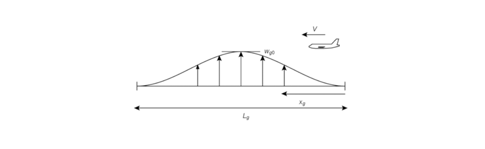
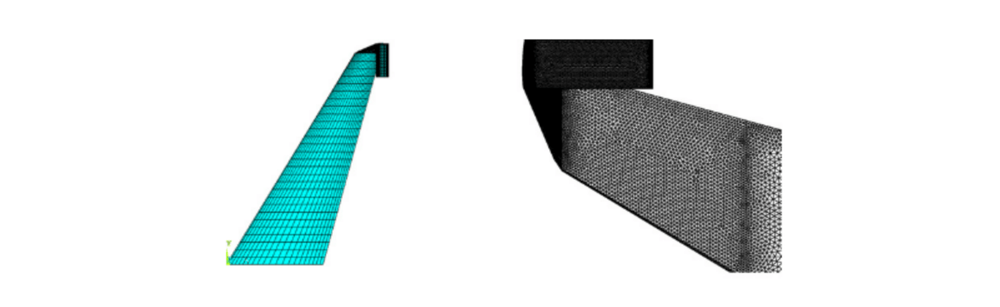
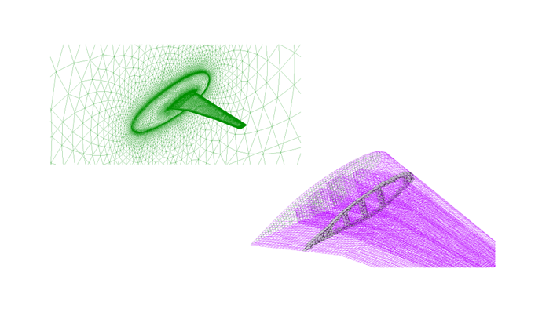

Aerodinamik verimliliğin arttırılması havacılığın en önemli konularındandır. Buna erişebilmek için kanatların tasarımının güncellenmesi gerekir. Kanat ucu uzantıları verimliliği arttıran uygulamalardan biridir. C-kanat ise en etkin kanat ucu uzantısı uygulamalarındandır. C-kanat aeroelastik analizde zorluk yaratmaktadır. Rüzgar yüklemeleri için birden fazla yüzeyin olması da ayrıca bir zorluk getirecektir.Bu etkileşimlerin incelenip optimum tasarıma ulaşılması gerekir. Rüzgar profillerine örnek olarak 1-cosine rüzgarı Şekil-1'de gösterilmiştir.
Bu projenin amacı C-kanatlarda flutter analizi yapılıp, rüzgar etkisi incelenerek mümkün olan en optimum tasarıma erişmektir. Bu bağlamda güvenli sınırlar içinde kalacak şekilde bir uçak tasarımına ulaşmak amaçlanmaktadır.

Şekil 1: 1-Kosinüs Rüzgar Profili
Uçuş verimliliğinin arttırılması havacılığın tarihi boyunca en önemli konulardan biri olmuştur. NASA gibi kurumlar, Boeing ve Airbus gibi şirketler bu konuda çok sayıda araştırma yapmaktadır. Uçuş verimliliğinin en belirgin göstergesi de aerodinamik verimliliktir. Bu konuda ilerleme sağlayabilmek için ya mevcut kanat modellerinde iyileştirmeler yapılacaktır ya da devrimsel bir kanat tasarımı yapılacaktır.
Sürüklemenin farklı etmenleri vardır. Bunlardan biri de düz uçuştaki sürüklemenin önemli bir kısmını oluşturan girdap sürüklemesidir. Kanat ucundaki girdap sürüklemesini azaltmak için kanat ucu uzantısı (wing tip extension) kullanılır. Kanatçık olan bilinen winglet de bunun bir örneğidir. C-kanat ise kanat ucu uzantılarının en verimli uygulamalarından biridir. C-kanat karmaşık bir tasarım olup uçağı hem yapısal hem de aerodinamik olarak etkilediği için en etkin tasarım, optimizasyon çalışması ile ulaşılabilir.
Literatürde C-kanat konfigürasyonunun flutter analizi üzerine tek bir çalışma bulunmaktadır. Bu çalışmada Cui (2012), flutter analizi Ansys ve CFX programları arasında bağlantı kurularak çözdürmüştür [1]. Ancak, üniversitemizde MSC NASTRAN/PATRAN eğitimi veriliyor. Bu doğrultuda aynı uçak modeli Nastran ile analiz edilecektir. Çalışmada kullanılan C-kanatın hesaplamalı FEM mesh'leri ve CFD grid'leri Şekil-2'de gösterilmektedir.

Şekil 2: C-Wing Ağ Yapısı: (mavi) FEM Model, (siyah) CFD Model
Proje 4 iş paketine bölünmüştür. Birinci iş paketi, Modifiye MAVRIC modelinin Nastran ile flutter çözümü yapılarak çözümün valide edilmesidir. Örnek olarak BAH kanadının 1-cosinüs rüzgarı analizinin sonuçları Şekil-3 ve Şekil-4'de gösterilmektedir. İkinci iş paketi, Modifiye MAVRIC modelinin Nastran üzerinden flutter için optimizasyonunun yapılmasıdır. Bu iş paketi hem son iş paketi ile karşılaştırılarak rüzgar yüklerinin uçak konfigürasyonuna etkisini gözlemlemek için faydalı bir çalışma olacaktır. Hem de Nastran kullanılarak optimizasyon yapılması için örnek olarak deneyim kazanılmasını sağlayacaktır.
Şekil 3: Rijit Gövde Plunge Mode Tepkisi
Üçüncü iş paketi, Nastran'da rüzgâr yüklemelerinin modellenmesidir. Bu iş paketinde ayrık (discrete) rüzgar modellemelerinde temel olarak kullanılan Keskin Uçlu (Sharp Edged) ve 1-Kosinüs (1-cos, one-minus-cosine) rüzgarları esas alınacaktır. Keskin Uçlu Rüzgâr, uçağa gelecek ani ve sabit hızlı rüzgârdır. 1-Kosinüs Rüzgârı ise grafiği 1-Kosinüs fonksiyonunun grafiğiyle aynı olan ve belirli bir sürede artıp sonrasında azalan hıza sahip rüzgârdır. Rüzgârlar, sadece aerodinamik yüklemelerde modellenir. Bu nedenle hareket denklemlerinden matris oluşturulduğunda rüzgârlar, değişkenlere bağlı olmayan yükleme oluşturur. Bu durumda flutter determinantı ile çözüm yapılamaz. Sadece belirli hızlarda sistemin dinamik cevabı elde edilebilir. Üçüncü iş paketinin amacı bu dinamik cevaba ulaşmaktır.
Şekil 4: Kanat Kökü Eğilme Momenti
Dördüncü iş paketinin amacı rüzgâr yükleri altında Modifiye MAVRIC modelini esas alarak aeroelastik optimizasyon yapmaktır. SU2 ve Nastran arasında bağlantı kurulabilirse aeroelastik analiz bu şekilde yapılacaktır. Böylece aeroelastik analiz, yüksek doğruluklu olacaktır. Rüzgâr yükleri altında aeroelastik açıdan optimum uçak konfigürasyonunun hesaplanması bu projenin çıktısı olarak değerlendirilebilir.
[1] P. Cui and J. Han. Prediction of flutter characteristics for a transport wing with wingtip devices. Aerospace Science and Technology, 23(1):461–468, Dec. 2012. doi: 10.1016/j.ast.2011.10.005. URL https://doi.org/10.1016/j.ast.2011.10.005.

Copyright © 2022. All Rights Reserved. Designed by AeroMDO